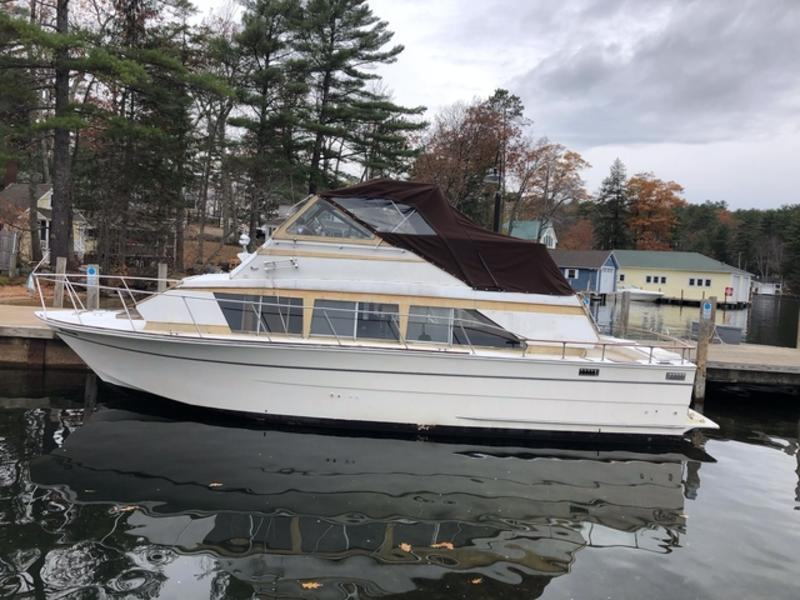

B-Atlas Boat Guide · CARV-33-MAR
Carver 3297 / 330 Mariner Mariner
1985–1996
The Carver 33 Mariner is a production coastal cruiser emphasizing interior volume, straightforward twin-engine propulsion and accessible used-market pricing. Layout and machinery vary by model, so individual configuration and condition remain important purchase factors.

- Length
- 32.25 ft
- Beam
- 12.33 ft
- Draft
- 2.75 ft
- Hull behaviour
- Planing
- Fuel
- Gasoline
- Propulsion
- Shaft
- Engine configuration
- Twin Inboard
- Boat family
- Cruiser
- Construction
- Fiberglass
Best for
- Inland and coastal cruising
- Buyers prioritizing space and value
- Owners comfortable maintaining older production systems
Trade-offs
- Operating cost reflects twin-engine planing performance
- Model-year changes can materially alter layout and systems
- Older examples require close survey attention to structure, tanks, wiring and machinery
Known concerns
- No model-specific concern has been promoted to B-Atlas’s evidence threshold. This does not mean the model has no age-, condition- or hull-specific risks.
Inspection focus
- Verify moisture around deck hardware, windows, hatches and rail bases
- Inspect flybridge, arch, windshield and upper-deck penetrations for water intrusion and structural movement
- Inspect fuel, water and waste tanks plus hoses and fittings
- Inspect engines, transmissions or sterndrives, exhaust and cooling systems
- Review AC/DC wiring, shore-power equipment and documented electrical modifications
- Confirm steering, trim-tab and generator operation where fitted
Continue researching
Related boat models
Carver 3207 Aft Cabin Aft Cabin
32 ft · Planing
Carver 3607 Aft Cabin Aft Cabin
35.58 ft · Planing
Carver 2827 Voyager / 2897 Mariner Flybridge Cruiser
28 ft · Planing
Carver 350 / 36 Mariner Mariner
36.58 ft · Planing
Carver 33 / 350 Aft Cabin Aft Cabin Motor Yacht
36 ft · Planing
Carver 3807 / 390 Aft Cabin Aft Cabin Motor Yacht
37.5 ft · Planing
About this record
B-Atlas preserves uncertainty: missing information remains unknown rather than being treated as a negative. Specifications and guidance describe the model record; individual boats can differ by year, equipment, refit and condition.